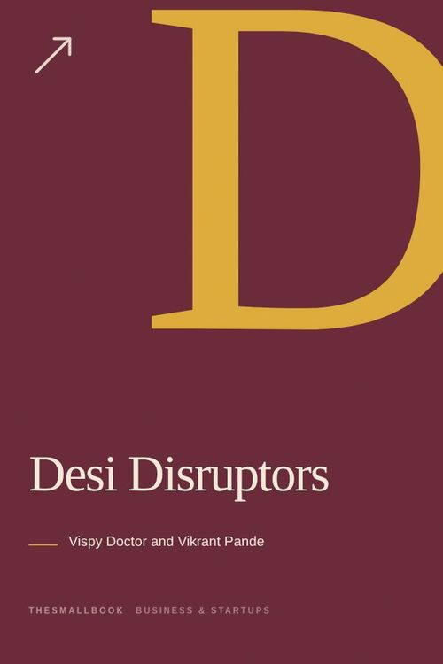

Library › Authors › Vispy Doctor and Vikrant Pande
Books by Vispy Doctor and Vikrant Pande
Vispy Doctor and Vikrant Pande has one book in the library. Every book here is read down to the big idea, the lessons, the lines worth keeping and the actions worth taking. Start with the summary, then buy the full book if it earns a place on your shelf.

Desi Disruptors: Timeless Lessons from Iconic Indian Brands
2020 · 12 min · 8 lessons
Every iconic Indian brand began with an unspoken consumer truth that somebody finally worked on. This book names the truth behind each brand.
Vispy Doctor (Ormax Consultants) and Vikrant Pande distill four decades of focus-group work into one doctrine: an insight is a consumer truth that has not yet been worked on. The book profiles 26 brands in four acts: blue oceans (Vicks, Maggi, Whisper, Frooti, Goodknight), created needs (Itch Guard, Livon, Ceasefire, Krack), commodities turned brands (Aashirvaad, Ambuja, Tanishq, iD Fresh, Kanan Devan, Lenskart, Puro), and giants dethroned (Moov over Amrutanjan, Fogg over AXE, Thums Up reborn). The recurring...
Lessons in the summary
- An Insight Is a Consumer Truth Nobody Has Worked On Yet
- Create the Ocean Instead of Fighting for Share
- Technology Plus Insight Becomes a Category
- Sell the Occasion, Not the Product
- Break the Silence Politely, Then Own the Problem
- Brand a Commodity by Removing Distrust
- Beat the Giant by Naming Its Weakness
- Focus Is a Practice, Not a Poster
Lines worth keeping
- Insight is a consumer truth which has not been worked on.
- It is the unexpected vision of the obvious.
- It is better to die differentiating.
Questions Vispy Doctor and Vikrant Pande helps answer
Read nearby authors next
- Devdutt Pattanaik 5 books
- Rashmi Bansal 5 books
- Robin Sharma 5 books
- Chetan Bhagat 4 books
- Seth Godin 4 books
- Alex Hormozi 3 books
- Gurcharan Das 3 books
- Nir Eyal 3 books